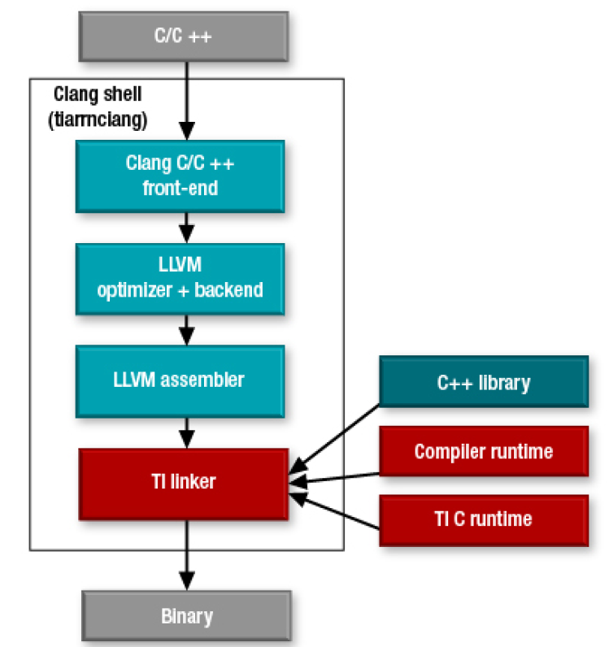

10.6. TI ARM CLANG Usage and Migration Guidelines¶
This section has additional useful information related to TI ARM Clang compiler/toolchain and porting existing code within PDK. It also compares some key points & configurations in TI ARM Clang (current compiler) and TI ARM CGT (older compiler) and the guidelines for migrating to TI ARM Clang from TI ARM CGT.
- TI ARM CLANG: Intoduction
- TI ARM CLANG: List of Suppressed Warnings
- TI ARM CLANG: Migration Guidelines
- TI ARM CLANG: Migration Care Abouts
- TI ARM CLANG: References
10.6.1. TI ARM CLANG: Intoduction¶
The TI Arm® code generation tools support development of applications for TI Arm-based platforms featuring TI Arm Cortex-M and Cortex-R series devices. There are now two Arm C/C++ compiler toolchains available from TI:
- TI Arm Clang C/C++ Compiler Tools (tiarmclang)
- TI Arm C/C++ Compiler Tools (armcl)
10.6.1.1. Introduction to TI ARM CLANG¶
The tiarmclang compiler is based on the open source LLVM compiler infrastructure and its Clang front-end. tiarmclang uses the TI Linker and C runtime for stability and reduced code size.
Benefits of tiarmclang include:
- Excellent C/C++ standards support
- Source-based code coverage
- Support for migration from armcl
- Improved code size over armcl/gcc
- Ease of use with fast compiles and expressive diagnostic messages
- GCC compatibility
- Comprehensive documentation: Getting Started Guide, Migration Guide and Compiler Tools User Manual
- Compiler Qualification Kit to assist qualifying the compiler to functional safety standards such as ISO 26262 and IEC 61508.
As a part of this migration activity, we are moving away from ‘armcl’ compiler tool chain and will be using ‘tiarmclang’ going forward. This will need some changes in CSL-FL, Drives, Sample Application and Linker Command File. The intent of this page is look at all the changes needed.
10.6.2. TI ARM CLANG: List of Suppressed Warnings¶
This section talks about list of suppressed warnings (reported as errors as warnings are treated as errors through ‘-Werror’ option). Most of these warninigs are not reported by TI ARM CGT compiler.
| Reported Warning | Description |
| -Wno-parentheses-equality | Equality comparison with extraneous parentheses |
| -Wno-unused-command-line-argument | If one of the option provided in the command is not used |
| -Wno-gnu-variable-sized-type-not-at-end | Variable sized member of the structure is not the last member of the structure |
| -Wno-unused-function | Warning about unused function |
| -Wno-address-of-packed-member | Taking the address of a packed member is dangerous since the reduced alignment of the pointee is lost. This can lead to memory alignment faults in some architectures if the pointer value is dereferenced |
| -Wno-self-assign | explicitly assigning value of variable of type * to itself |
| -Wno-ignored-attributes | attribute declaration must precede definition |
| -Wno-bitfield-constant-conversion | Implicit truncation from ‘int’ to bit-field changes value from 64 to 0 |
| -Wno-unused-const-variable | unused constant variable |
| -Wno-unused-variable | unused variable |
| -Wno-format-security | format string is not a string literal (potentially insecure) |
| -Wno-excess-initializers | Excess braces are available while initializing structure elements |
| -Wno-sometimes-uninitialized | Variable may be initialized before it’s use |
| -Wno-empty-body | Empty body following conditional branching |
| -Wno-extern-initializer | Extern variable is initialized/re-initialized |
| -Wno-absolute-value | Using an absolute value function of the wrong type/using the improper sized absolute value function/taking the absolute value of an unsigned value |
10.6.3. TI ARM CLANG: Migration Guidelines¶
This sections talks about changes needed for migrating code base from TI ARM CGT to TI ARM Clang. armcl options has to be replaced by tiarmclang option as shown in following sections/tables. These changes mainly falls into two categories and are as follows:
10.6.3.1. Build Changes¶
10.6.3.1.1. Compiler/Assembler Options¶
| `armcl` options (older) | `tiarmclang` options (new) |
| TI pre-defined macro symbols, pragmas, and intrinsic | Not Supported |
| –silicon_version=<processor ID> (-mv<processor ID>) | -mcpu=<processor variant> -march=<architecture ID> |
| –code_state=16/32 | -mthumb/-marm |
| –float_support=<float hardware ID> | -mfloat-abi=<soft hard> -mfpu=<float hardware ID> |
| –endian=little (-me) –endian=big (default) | -mlittle-endian (default) -mbig-endian |
| –opt_level=<off/0/1/2/3/4> (-O<off/0/1/2/3/4> | -O<0/1/2/3/fast/s/z/g> |
| –opt_for_speed=<0/1/2/3/4/5> (-mf=<0/1/2/3/4/5>) | -Oz -Os -O3 -Ofast |
| –obj_directory=<dir> (-fr) | -c -save-temps |
| –temp_directory=<dir> (-ft) | Not Supported |
| –asm_file=<file> (-fa=<file>) | -x assembler/-x assembler-with-cpp/-x ti-asm |
| –c_file=<file> (-fc=<file>) | -x c |
| –obj_file=<file> (-fo=<file>) | Not Supported |
| –entry_hook=<func>/–exit_hook=<func> | -finstrument_functions |
| –entry_parm=<none/name/address>/–exit_parm=<none/name/address>/–remove_hooks_when_inlining | Not Supported |
| –define=<name>[=<value>] (-D=<name>[=<value>]) | -D<name>[=<value>] |
10.6.3.1.2. Linker Options¶
| `armcl` options (older) | `tiarmclang` options (new) |
| -run_linker | Not needed as will be automatically invoked by compiler by default |
| -z | -Xlinker <linker option> -Wl,<comma-separated list of linker options> |
| -m map_filename | -m=map_filename |
| -o output_filename | –output_file=output_filename |
Note
- For all the linker related options, use either
- prepend each linker option with “-Xlinker ” (there is a space between ‘-Xlinker’ keyword and actual command line option) OR
- group all command line options together with each separated with ”,” and then prepend this full set with “-Wl,”
- First option is used in PDK build infrastructure.
10.6.3.2. Source File/Code Changes¶
Here are few and quick changes needed (following list mostly contains armcl options with corresponding counterparts in tiarmclang, this should be mostly ‘find and replace’ in the source code):
10.6.3.2.1. Macros¶
| `armcl` options (older) | `tiarmclang` options (new) |
| __TI_ARM_V4__ /___TI_ARM_V5__ /___TI_ARM_V7A8__ | Not Supported (tiarmclang does not support this arm architecture or processor variant) |
| __16bis__ | defined(__thumb__) |
| __32bis__ | !defined(__thumb__) |
| __TI_EABI_SUPPORT__ | defined(__ELF__) |
| __TI_ARM_V6__ | (__ARM_ARCH == 6) |
| __TI_ARM_V6M0__ | (__ARM_ARCH == 6) && (__ARM_ARCH_PROFILE == ‘M’) |
| __TI_ARM_V7__ | (__ARM_ARCH == 7) |
| __TI_ARM_V7M3__ | (__ARM_ARCH == 7) && (__ARM_ARCH_PROFILE == ‘M’) && !defined(__ARM_FEATURE_SIMD32) |
| __TI_ARM_V7M4__ | (__ARM_ARCH == 7) && (__ARM_ARCH_PROFILE == ‘M’) && defined(__ARM_FEATURE_SIMD32) |
| __TI_ARM_V7R4__ | (__ARM_ARCH == 7) && (__ARM_ARCH_PROFILE == ‘R’) && !defined(__ARM_FEATURE_IDIV) |
| __TI_ARM_V7R5__ | (__ARM_ARCH == 7) && (__ARM_ARCH_PROFILE == ‘R’) && defined(__ARM_FEATURE_IDIV) |
| __TI_VFP_SUPPORT__ | defined(__ARM_FP) |
| __TI_VFPLIB_SUPPORT__ | !defined(__ARM_FP) |
| __TI_VFPV3D16_SUPPORT__ | defined(__ARM_FP) && (__ARM_FP == 12) && (__ARM_ARCH_PROFILE == ‘R’) |
| _TI_FPV4SPD16_SUPPORT__ | defined(__ARM_FP) && (__ARM_FP == 6) && (__ARM_ARCH_PROFILE == ‘M’) |
| __big_endian__ | defined(__ARM_BIG_ENDIAN) |
| __little_endian__ | !defined(__ARM_BIG_ENDIAN) |
10.6.3.2.2. Pragmas¶
| `armcl` options (older) | `tiarmclang` options (new) |
| #pragma CODE_STATE (function, 32) | __attribute__((target(“arm”))) |
| #pragma INTERRUPT (function, IRQ) | __attribute__((interrupt(“IRQ”))) function |
| #pragma CODE_SECTION(func_name, “scn_name”) | __attribute__((section(“scn_name”))) |
| #pragma DATA_ALIGN(“sym_name”, alignment) | __attribute__((aligned(alignment))) |
| #pragma DATA_SECTION(sym_name, “scn_name”) | __attribute__((section(“scn_name”))) |
| #pragma FUNC_ALWAYS_INLINE(func_name)/#pragma FUNC_CANNOT_INLINE(func_name) | __attribute__((always_inline))/__attribute__((noinline)) |
| #pragma LOCATION(address) | __attribute__((location(address))) |
| #pragma NOINIT(sym_name) | __attribute__((noinit)) |
| #pragma RETAIN(sym_name) | __attribute__((retain))/__attribute__((used)) |
| #pragma #pragma WEAK(sym_name) | __attribute__((weak)) |
| #pragma NO_HOOKS(func_name)/#pragma SWI_ALIAS(func_name, swi_number) | Not Supported |
| #pragma SET_CODE_SECTION(“scn_name”)/#pragma SET_DATA_SECTION(“scn_name”) | Not Supported directly - Use “__attribute__((section(“scn_name”)))” for each following function/variable |
| #pragma diag_suppress 179 | #pragma clang diagnostic warning “-Wunused” |
10.6.4. TI ARM CLANG: Migration Care Abouts¶
Tip
- This section does not talk about all the changes required, it only talks about most commonly used options. Please refer to `TI Arm Clang Compiler Tools User’s Guide` mentioned in References section.
10.6.4.1. Structure Initialization¶
Failing to initialize the structure instance may cause unexpected application failures
Clang tool-chain does not allow initializing only a few members of structure (and rest being set to 0) using below method:
struct DemoStruct_t { uint32_t memberA; /**< Member A */ uint32_t memberB; /**< Member B */ uint32_t memberC; /**< Member C */ }; /* Initializing Member A of the structure */ DemoStruct_t demoStructInst = {22U};User can either initialize all members of the structure by enclosing them into pair of curly parenthesis (“{ }”) OR initialize particular member of structure like ”.<member_name>=<initialization_value>;” Here are few examples to do the same:
- Example 1:
struct DemoStruct_t { uint32_t memberA; /**< Member A */ uint32_t memberB; /**< Member B */ uint32_t memberC; /**< Member C */ }; DemoStruct_t demoStructInst[2] = { /* Initialize all 3 members of the structure */ { .memberA = 22U; .memberB = 44U; .memberC = 88U; }, /* Initialize only needed 2 members of the structure */ { .memberA = 22U; .memberC = 88U; }, };
- Example 2:
struct DemoStruct_t { uint32_t memberA; /**< Member A */ uint32_t memberB; /**< Member B */ uint32_t memberC; /**< Member C */ }; /* This will initialize all members to '0' */ DemoStruct_t demoStructInst = {0U}; demoStructInst.memberA = 22U;
10.6.4.2. Linker Command File Changes¶
- Add `’.rodata’` section in the linker command file and assign/allot it to same section as ‘.const’ sections.
10.6.4.3. Other Key Care Abouts¶
- For armcl Intrinsics, the ‘arm_acle.h’ Header file needs to be included
- Non-ACLE armcl Compiler Intrinsics are not supported in tiarmclang
- Accessing armcl Compiler Intrinsics via the ‘ti_compatibility.h’ Header File